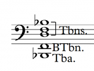
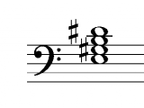
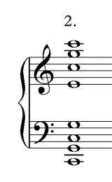
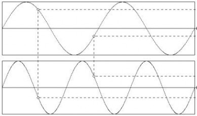
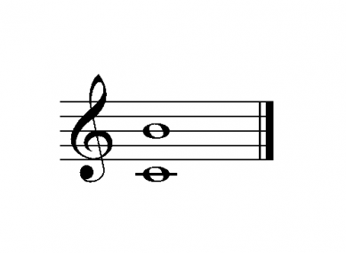
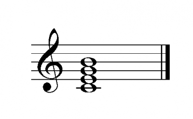
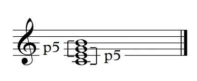
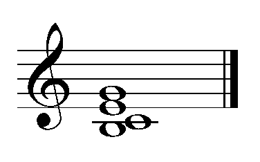
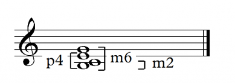

<?xml version="1.0" encoding="UTF-8"?><rss version="2.0"
	xmlns:content="http://purl.org/rss/1.0/modules/content/"
	xmlns:wfw="http://wellformedweb.org/CommentAPI/"
	xmlns:dc="http://purl.org/dc/elements/1.1/"
	xmlns:atom="http://www.w3.org/2005/Atom"
	xmlns:sy="http://purl.org/rss/1.0/modules/syndication/"
	xmlns:slash="http://purl.org/rss/1.0/modules/slash/"
	xmlns:itunes="http://www.itunes.com/dtds/podcast-1.0.dtd"
xmlns:rawvoice="http://www.rawvoice.com/rawvoiceRssModule/"
xmlns:googleplay="http://www.google.com/schemas/play-podcasts/1.0/play-podcasts.xsd"
>

<channel>
	<title>Robin Hoffmann &#8211; SCOREcastOnline.com</title>
	<atom:link href="." rel="self" type="application/rss+xml" />
	<link>http://www.scorecastonline.com</link>
	<description>Global Community for the Professional Media Composer</description>
	<lastBuildDate>Mon, 19 Jun 2017 08:43:18 +0000</lastBuildDate>
	<language>en-US</language>
	<sy:updatePeriod>hourly</sy:updatePeriod>
	<sy:updateFrequency>1</sy:updateFrequency>
	<generator>https://wordpress.org/?v=4.8</generator>
<!-- podcast_generator="Blubrry PowerPress/7.0.4 beta" mode="advanced" feedslug="feed" -->
	<itunes:summary>Global Community for the Professional Media Composer</itunes:summary>
	<itunes:author>Robin Hoffmann &#8211; SCOREcastOnline.com</itunes:author>
	<itunes:image href="../../../wp-content/plugins/powerpress/itunes_default.jpg" />
	<itunes:subtitle>Global Community for the Professional Media Composer</itunes:subtitle>
	<image>
		<title>Robin Hoffmann &#8211; SCOREcastOnline.com</title>
		<url>../../../wp-content/uploads/powerpress/sig-SCO.jpg</url>
		<link>http://www.scorecastonline.com</link>
	</image>
<site xmlns="com-wordpress:feed-additions:1">29563098</site>	<item>
		<title>How to Use Chord Voicings Effectively – Part 2</title>
		<link>../../../2012/09/24/chord-voicings-part-2/</link>
		<comments>../../../2012/09/24/chord-voicings-part-2/#comments</comments>
		<pubDate>Mon, 24 Sep 2012 13:00:32 +0000</pubDate>
		<dc:creator><![CDATA[Robin Hoffmann]]></dc:creator>
				<category><![CDATA[Composition]]></category>
		<category><![CDATA[Latest Resources]]></category>

		<guid isPermaLink="false">../../../?p=1750</guid>
		<description><![CDATA[In this second part in a series on chord voicings, Robin Hoffman writes about low interval limits and explains how to effectively apply them to your music.]]></description>
				<content:encoded><![CDATA[<p>After having a look at the fundamentals of chord voicings <a href="../../../2012/06/18/chord-voicings-part-1">in Part 1</a>, we&#8217;ll have a look at other important factors for good chord voicings.</p>
<p>Another basic element of effective chord voicings are so called “Low Interval Limits” (LIL). The lower you get on the piano, for example, the more tricky it is to find chords that don&#8217;t sound muddy. Many people trust their ear on these things, which is basically a good idea. However sometimes you might be mislead by the sound texture, for example of your piano that you compose on, to believe something does sound fine when it actually translates into muddyness on real instruments. For every two notes that sound together in a certain interval, there is a limit how low you can go with them without them sounding muddy. Basically you can dissect every voicing with these limits into every internal interval.</p>
<p>You&#8217;ll see a chart of these low interval limits below. However, consider that these are just guidelines. On some occasions it might be possible or even desired to go lower, for example if you want to create a very dark texture. The rule of thumb is, if you follow these limits, you can be sure that your voicing will not sound muddy. Note that very consonant intervals like the perfect fifth can go much lower without sounding muddy compared to more dissonant intervals.</p>
<p><a href="../../../?attachment_id=1751" rel="attachment wp-att-1751"></a></p>
<p>If you create a voicing, checking each interval for violating the low interval limits is actually not needed most of the time. Often, it is sufficient to check the lowest interval for violations.</p>
<p>As an example, the following voicing doesn&#8217;t violate any low interval limits (it is actually the 4 Trombones+Tuba voicing from the entrance of the Island Fanfare from JURASSIC Park as heard here:</p>
<p><iframe src="http://www.youtube.com/embed/Xqo3ZApCJt0#t=81s" frameborder="0" width="420" height="315"></iframe><br />
<a href="../../../?attachment_id=1752" rel="attachment wp-att-1752"></a><br />
<iframe src="http://w.soundcloud.com/player/?url=http%3A%2F%2Fapi.soundcloud.com%2Ftracks%2F59745968%3Fsecret_token%3Ds-8KOWO&amp;show_artwork=true&amp;secret_url=true" frameborder="no" scrolling="no" width="100%" height="166"></iframe><br />
<br />
However, this voicing does violate the LIL.</p>
<p><a href="../../../?attachment_id=1753" rel="attachment wp-att-1753"></a><br />
<iframe src="http://w.soundcloud.com/player/?url=http%3A%2F%2Fapi.soundcloud.com%2Ftracks%2F59745969%3Fsecret_token%3Ds-D1g8j&amp;show_artwork=true&amp;secret_url=true" frameborder="no" scrolling="no" width="100%" height="166"></iframe></p>
<p>The minor third between a and c is too low. If you check these voicings on the piano, you will hear how the second voicing has a much more instable and muddy sound even though its root note is more than an octave higher than the “Jurassic Park voicing”, which has way more sonority and resonance.</p>
<p>When you check your voicings for LILs, take every voice into account if it is spread over several instruments or groups.</p>
<p>The important exception here is the case when the lowest note of your voicing is not the root note. In this cases, you have to pretend that the root is present in the voicing as lowest voice and check the low interval limits with it in mind. For example this Am7 voicing looks just fine at first sight:</p>
<p><a href="../../../?attachment_id=1754" rel="attachment wp-att-1754"></a><br />
<iframe src="http://w.soundcloud.com/player/?url=http%3A%2F%2Fapi.soundcloud.com%2Ftracks%2F59745970%3Fsecret_token%3Ds-eaA3j&amp;show_artwork=true&amp;secret_url=true" frameborder="no" scrolling="no" width="100%" height="166"></iframe></p>
<p>However, due to the fact that the lowest note is the third of the chord and not the root, we need to presume the presence of the root note to check for LILs:</p>
<p><a href="../../../?attachment_id=1755" rel="attachment wp-att-1755"></a></p>
<p>In this case the lowest third is too low again, therefore the voicing should be revoiced in order to not sound muddy.</p>
<p>At first, it will be a little bit annoying to actually check every chord you write against the table from above, however with a little experience you will memorize these LILs and also automatically sense violations. The important thing here is to get a sensitive hearing for such problems.</p>
<p>However, be warned to think about easily avoiding violations of the LILs by generally distributing any harmonic content in a high register. While there are no “High Interval Limits”, generally harmonic content is best to be distributed more or less in the octave below middle c.<br />
<br />
This register has the advantage of being not too low for most intervals and having a high degree of resonance.</p>
<p>If you compare this Emaj7 voicing:</p>
<p><a href="../../../?attachment_id=1756" rel="attachment wp-att-1756"></a><br />
<iframe src="http://w.soundcloud.com/player/?url=http%3A%2F%2Fapi.soundcloud.com%2Ftracks%2F59745971%3Fsecret_token%3Ds-KDSwV&amp;show_artwork=true&amp;secret_url=true" frameborder="no" scrolling="no" width="100%" height="166"></iframe></p>
<p>to the very same voicing two octaves higher:</p>
<p><a href="../../../?attachment_id=1757" rel="attachment wp-att-1757"></a><br />
<iframe src="http://w.soundcloud.com/player/?url=http%3A%2F%2Fapi.soundcloud.com%2Ftracks%2F59745972%3Fsecret_token%3Ds-XJYYl&amp;show_artwork=true&amp;secret_url=true" frameborder="no" scrolling="no" width="100%" height="166"></iframe></p>
<p>you will hear a very clear difference in resonance. The effect also happens already at one octave difference, however two octaves make it even clearer. The lower voicing has a strong resonance and can harmonically support any melody on top of it. The higher one has a certain harmonic quality as well, however imagining a bass note and a melody on top of it will very quickly make clear that it has not much harmonic supporting power. This becomes an even more important issue in orchestral writing. Many inexperienced orchestrators and composers distribute the harmonic content way too high in their writing leaving a huge “empty space” in the low register which will result in a unfocussed high register and a very empty overall sound.</p>
<p>Another very misleading factor regarding good voicings is the bad influence of hand limitations of piano players. In orchestral chord voicings, the general rule of thumb is to not exceed a distance more than an octave between the single voices of the chord (with exception of the lowest to the 2nd lowest voice which has no limit). Otherwise, the voicing tends to fall apart acoustically and sounds partially detached. The span of the hand however doesn&#8217;t allow to follow this general rule on the piano so we often see, play and compose voicings like this on the piano:</p>
<p><a href="../../../?attachment_id=1758" rel="attachment wp-att-1758"></a><br />
<iframe src="http://w.soundcloud.com/player/?url=http%3A%2F%2Fapi.soundcloud.com%2Ftracks%2F59745973%3Fsecret_token%3Ds-lylqo&amp;show_artwork=true&amp;secret_url=true" frameborder="no" scrolling="no" width="100%" height="166"></iframe></p>
<p>While this is not avoidable in piano music, unfortunately many composers/orchestrators translate this voicing directly to their orchestral arrangements ignoring the 2 octave gap in the middle. The result will be a very strange sounding inhomogenous orchestral chord. In order to translate that properly to orchestra it needs the step of ignoring ones own fingers and fill up the gap for example like these 3 examples:</p>
<p><a href="../../../?attachment_id=1759" rel="attachment wp-att-1759"></a><a href="../../../?attachment_id=1760" rel="attachment wp-att-1760"><br />
<iframe src="http://w.soundcloud.com/player/?url=http%3A%2F%2Fapi.soundcloud.com%2Ftracks%2F59745974%3Fsecret_token%3Ds-c1Vj6&amp;show_artwork=true&amp;secret_url=true" frameborder="no" scrolling="no" width="100%" height="166"></iframe></a></p>
<p><a href="../../../?attachment_id=1761" rel="attachment wp-att-1761"><br />
<iframe src="http://w.soundcloud.com/player/?url=http%3A%2F%2Fapi.soundcloud.com%2Ftracks%2F59745975%3Fsecret_token%3Ds-iYv7c&amp;show_artwork=true&amp;secret_url=true" frameborder="no" scrolling="no" width="100%" height="166"></iframe></a></p>
<p><br />
<iframe src="http://w.soundcloud.com/player/?url=http%3A%2F%2Fapi.soundcloud.com%2Ftracks%2F59745976%3Fsecret_token%3Ds-eGYlE&amp;show_artwork=true&amp;secret_url=true" frameborder="no" scrolling="no" width="100%" height="166"></iframe></p>
<p>None of the voicing violates the LILs or has voices further than an octave apart. However, every voicing has certain advantages and disadvantages.</p>
<p>Voicing 1 has a fairly open and transparent structure due to the quite large intervals involved. Note that the third of the chord is stated the first time in the octave below middle c. Especially the third of a chord has a strong influence on the resonance so the lower you put it without violating the LILs, the more resonance you will get. Also, note the fairly even distribution between chord tones. We have the root note stated 3 times and the third and fifth two times each. This voicing would sound very good as a string voicing, having a lot of beautiful resonance and an open structure to not sound overly dense.</p>
<p>Voicing 2 looks basically quite similar to Voicing 1, however has a few flaws compared to it. The above mentioned resonant third is stated the first time in the middle octave, losing its potential resonance. Also we have a quite unbalanced distribution of chord tones: 4 times the root, 3 times the fifth and only once the third. This voicing will feel quite unbalanced and you would need to orchestrate it very carefully in order to make it sound good. If I were to decide for one of the first two voicings I would definitely go for the first one.</p>
<p>Voicing 3 basically fills up the gap from the piano vocing with every available chord note in close position, resulting in a 12-voice chord. This voicing sounds very dense and thick which is not always the desired effect, however it would work nicely as a tutti chord with all instruments from the orchestra involved.</p>
<p>Orchestrating voicings specifically for instruments will be dealt in a later part of this series. Next time we will focus on open vs. close voicings and start working with more complex chord structures.</p>
 <!-- WP Biographia v3.3.2 -->
<div class="wp-biographia-container-top" style="background-color: #eadcdc; border-top: 4px solid #000000;"><div class="wp-biographia-pic" style="height:100px; width:100px;"></div><div class="wp-biographia-text"><h3><a href=".." title="Robin Hoffmann">Robin Hoffmann</a></h3><p>Born in a musical family, <b>Robin Hoffmann</b> grew up surrounded by music. Besides scoring several feature films and orchestrating major game titles such as <i>Anno 1404, Black Prophecy</i> and <i>Halo Legends</i>, Robin has written a number of concert compostions including a Violin Concerto which has been recorded with the LONDON SYMPHONY ORCHESTRA at Abbey Road Studios. He co-composed the multiple award-winning musical <i>Dāllebach Kari</i> and has worked on music for several international artists such as <i>Sarah Chang, Russell Watson, The Lovebugs,</i> and <i>Seven</i>. He is also teaching several students in composition/orchestration as well as tutoring the renowned online course programmes by <i>ThinkspaceOnline</i>.</p><div class="wp-biographia-links"><small><ul class="wp-biographia-list wp-biographia-list-icon"><li><a href="http://www.robin-hoffmann.com" target="_blank" title="Robin Hoffmann On The Web" class="wp-biographia-link-icon"></a></li><li><a href="www.facebook.com/robin.hoffmann.composer" target="_blank" title="Robin Hoffmann On Facebook" class="wp-biographia-link-icon"></a></li><li><a href=".." target="_blank" title="More Posts By Robin Hoffmann" class="wp-biographia-link-icon"></a></li></ul></small></div></div></div><!-- WP Biographia v3.3.2 -->
]]></content:encoded>
			<wfw:commentRss>../../../2012/09/24/chord-voicings-part-2/feed/</wfw:commentRss>
		<slash:comments>3</slash:comments>
	<post-id xmlns="com-wordpress:feed-additions:1">1750</post-id>	</item>
		<item>
		<title>How to Use Chord Voicings Effectively &#8211; Part 1</title>
		<link>../../../2012/06/18/chord-voicings-part-1/</link>
		<comments>../../../2012/06/18/chord-voicings-part-1/#comments</comments>
		<pubDate>Mon, 18 Jun 2012 13:00:00 +0000</pubDate>
		<dc:creator><![CDATA[Robin Hoffmann]]></dc:creator>
				<category><![CDATA[Composition]]></category>
		<category><![CDATA[Latest Resources]]></category>

		<guid isPermaLink="false">../../../?p=1525</guid>
		<description><![CDATA[Robin Hoffman kicks off a new series on Chord Voicings by discussing how we hear consonance and dissonance.]]></description>
				<content:encoded><![CDATA[<div>
<p>There are nearly endless possibilities of how to make the same chord sound, and while some of them sound quite disastrous others have a stellar resonance and are reason for scrolling back in an audio file to listen once again. There seem to be endless parameters that define a chord sound, and often people end up in working their way to their desired sound by trial and error.</p>
<p>This tutorial series tries to shed some light on the reasons that make a difference in a chord voicing and why.</p>
<p>But first of all: what is the difference between a chord and a voicing? While the term chord only defines which notes sound together, a voicing specifies exactly HOW they sound together. A voicing is the specific structure of how the notes of the chord are spread out over the register.</p>
<p>To understand how voicings work it is necessary to have a basic knowledge of acoustics. Due to the fact that there are several frequencies sounding together at the same time, we need to understand how they behave together.</p>
<p>A major principle that defines not only voicings but big parts of the music we hear is consonance and dissonance.</p>
<p>Basically, if we hear two notes together they have a specific oscillation ratio. For example if note <em>a</em> swings exactly twice as often as note <em>b</em>, note <em>a</em> is exactly one octave higher than note <em>b</em>. The ratio in this case is 2:1. The simpler this ratio, the more consonant the resulting sound that we&#8217;re hearing when both notes are playing together. For our perception that means that they sound relaxed and stable without (much) tendency to resolve.</p>
<p>Below you see the ratio of a perfect fifth. While the first frequency does two complete oscillations, the second one does three in the same time which means a ratio of 2:3. <em>(Actually, the perfect fifth and most other intervals of our tempered tuning have slight differences to that but for the matter of simplicity, we&#8217;ll stick to their “natural” ratios.)</em></p>
<p><a href="../../../?attachment_id=1581" rel="attachment wp-att-1581"></a></p>
<p>The more complex that ratio gets, the more dissonant it sounds to our ear. Generally we feel the urge of the notes wanting to resolve to a more consonant sound.</p>
<p>Understanding this basic principle helps a lot to actually understand how voicings work. Of course, the more notes your chord consist of the more complex the relation between all the notes becomes, and eventually it will become too complex to actually consider all interval relations. This is the reason why many people go to the mode of &#8220;I&#8217;ll just try what sounds best.&#8221;</p>
</div>
<div>
<p>But the concept of consonance and dissonance is part of every voicing, and having this under control helps tremendously to make good sounding voicings.</p>
<p>The following is a very simple example of how big the influence of that principle on any chord voicing is:</p>
<p>A major seventh has a very strong dissonance (the ratio is 15:8) which can clearly be heard by the impression to our ear that it has a strong tendency to resolve outwards to the octave.</p>
<p><a href="../../../?attachment_id=1582" rel="attachment wp-att-1582"></a></p>
<p><iframe src="http://w.soundcloud.com/player/?url=http%3A%2F%2Fapi.soundcloud.com%2Ftracks%2F49386819%3Fsecret_token%3Ds-2LvDx&amp;show_artwork=true&amp;secret_url=true" frameborder="no" scrolling="no" width="100%" height="166"></iframe></p>
<p>If we now fill up this interval with two more notes to end up with a maj7 chord, we notice that the strong dissonance of the major seventh seems to be quite a bit reduced.</p>
<p><a href="../../../?attachment_id=1583" rel="attachment wp-att-1583"></a></p>
<p><iframe src="http://w.soundcloud.com/player/?url=http%3A%2F%2Fapi.soundcloud.com%2Ftracks%2F49386775%3Fsecret_token%3Ds-gYiPS&amp;show_artwork=true&amp;secret_url=true" frameborder="no" scrolling="no" width="100%" height="166"></iframe></p>
<p>In fact, in standard jazz theory, this chord actually can sustain as a tonic chord and be treated as a chord that has no tendency to resolve.</p>
<p>But how is it possible that the formerly very strong dissonance of the major seventh got subjectively reduced? The explanation for this can be found in the inner structure of the chord. We learned above, that a perfect fifth is a very consonant interval creating a lot of acoustic stability. If we now have a more thorough look at our maj7 chord we can actually find two perfect fifths in this voicing.</p>
<p><a href="../../../?attachment_id=1584" rel="attachment wp-att-1584"></a></p>
<p>The influence of these two perfect fifths stabilize the whole chord structure in a way that the dissonance of the major seventh gets pushed more to the background of our perception. Also, the thirds that we can see in this chord voicing have quite a strong consonance and therefore add to the more stable sounding structure.</p>
<p>Let&#8217;s just have a look at a different voicing of this very same maj7 chord to get an understanding of how different voicings can alter the sound of the very same chord:</p>
<p><a href="../../../?attachment_id=1585" rel="attachment wp-att-1585"></a></p>
<p><iframe src="http://w.soundcloud.com/player/?url=http%3A%2F%2Fapi.soundcloud.com%2Ftracks%2F49386725%3Fsecret_token%3Ds-ELt57&amp;show_artwork=true&amp;secret_url=true" frameborder="no" scrolling="no" width="100%" height="166"></iframe></p>
<p>If we now look at the interval structure, we get quite a few differences:</p>
</div>
<div>
<div>
<ul>
<li>We still have the basic triad of C, E and G so basically one perfect fifth and two thirds remain the same.</li>
<li>However, we lose the major 7th and have a minor 2nd now, both intervals have more or less the same degree of dissonance (as they are complimentary intervals) with a tendency of the major 7th sounding more dissonant as the two “rubbing” frequencies are more exposed due to the distance between them while on the major 2nd they feel more like a frequency cluster being more tricky to hear through by our ear.</li>
<li>We&#8217;re also losing one of the perfect fifths from before and now have a perfect 4th instead. The perfect fourth has a slightly stronger dissonance (ratio of 3:4) compared to the perfect fifth (2:3) but is still considered as a consonant interval.</li>
<li>The framing interval now becomes a minor 6th which has a comparable dissonance to a third</li>
</ul>
<p><a href="../../../?attachment_id=1586" rel="attachment wp-att-1586"></a></p>
<p>Just by inverting the chord, we got a slightly different sounding voicing regarding the dissonance.</p>
<p>The perfect fourth has a slightly more dissonant sound than the perfect fifth that we had in the root position. The minor second is almost as dissonant as the major seventh it used to be so the overall impression might be a slightly more dissonant and less stable sound than the root position.</p>
<p>Of course the differences here can be argued, as they are not really significant and are probably also down to taste and listening experience. But the more complex the chords we work with get, the more drastic differences can be found between different chord voicings.</p>
<p>The next part of this series will deal with more complex chords, discussing the influence of so called tension notes on different types of chords.</p>
</div>
<div>[Photo by Hobvias Sudoneighm aka <strong id="yui_3_5_0_3_1339455106624_1011"><a id="yui_3_5_0_3_1339455106624_1016" href="http://www.flickr.com/photos/striatic/">striatic</a>]</strong></div>
</div>
 <!-- WP Biographia v3.3.2 -->
<div class="wp-biographia-container-top" style="background-color: #eadcdc; border-top: 4px solid #000000;"><div class="wp-biographia-pic" style="height:100px; width:100px;"></div><div class="wp-biographia-text"><h3><a href=".." title="Robin Hoffmann">Robin Hoffmann</a></h3><p>Born in a musical family, <b>Robin Hoffmann</b> grew up surrounded by music. Besides scoring several feature films and orchestrating major game titles such as <i>Anno 1404, Black Prophecy</i> and <i>Halo Legends</i>, Robin has written a number of concert compostions including a Violin Concerto which has been recorded with the LONDON SYMPHONY ORCHESTRA at Abbey Road Studios. He co-composed the multiple award-winning musical <i>Dāllebach Kari</i> and has worked on music for several international artists such as <i>Sarah Chang, Russell Watson, The Lovebugs,</i> and <i>Seven</i>. He is also teaching several students in composition/orchestration as well as tutoring the renowned online course programmes by <i>ThinkspaceOnline</i>.</p><div class="wp-biographia-links"><small><ul class="wp-biographia-list wp-biographia-list-icon"><li><a href="http://www.robin-hoffmann.com" target="_blank" title="Robin Hoffmann On The Web" class="wp-biographia-link-icon"></a></li><li><a href="www.facebook.com/robin.hoffmann.composer" target="_blank" title="Robin Hoffmann On Facebook" class="wp-biographia-link-icon"></a></li><li><a href=".." target="_blank" title="More Posts By Robin Hoffmann" class="wp-biographia-link-icon"></a></li></ul></small></div></div></div><!-- WP Biographia v3.3.2 -->
]]></content:encoded>
			<wfw:commentRss>../../../2012/06/18/chord-voicings-part-1/feed/</wfw:commentRss>
		<slash:comments>5</slash:comments>
	<post-id xmlns="com-wordpress:feed-additions:1">1525</post-id>	</item>
	</channel>
</rss>
